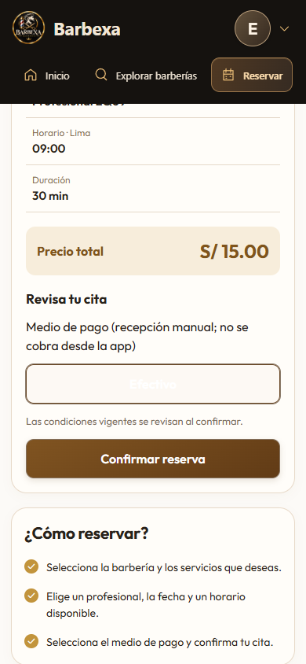
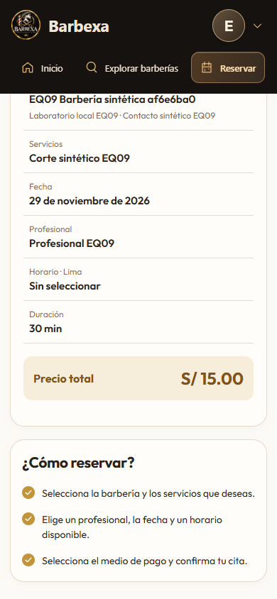
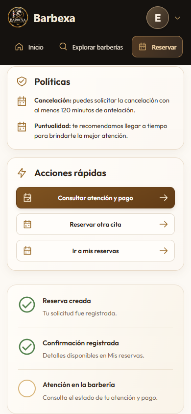

BARBEXA · EQ-09
Resumen sanitizado de Playwright Test · 26/11/2026 · solo laboratorio local
Recorrido Web: 1 aprobado, 0 fallos
Playwright 1.62.1 · Chromium 151.0.7922.34 · 390 × 844 px · 11.1 s de runner · 1 worker · 0 reintentos automáticos.
EQ-09 integral permanece parcial: ubicación denegada, Android nativo, participantes reales y accesibilidad completa no acreditados.
| Comprobación | Resultado real |
|---|
| Sesiones independientes | Aprobado |
| A confirma con 201 | Aprobado |
| Mensaje textual de conflicto | Profesional no disponible en ese horario |
| Servicios conservados | Aprobado |
| Sin reenvío automático tras 409 | Aprobado |
| Recuperación con teclado | Aprobado |
| Turno ocupado retirado del listado | Aprobado |
| Una sola confirmación de recuperación | Aprobado |
| Sin reenvío al recargar | Aprobado |
HTTP y persistencia
A: 201 · B: 409 → 201. Dos reservas persistidas; la petición rechazada no creó filas. Ninguna respuesta de negocio fue simulada.
18.981 reservas globales al cierre; cero violaciones de integridad. Se conservaron todas las filas previas de 18 tablas, 814 archivos protegidos y 763 hashes históricos.
Accesibilidad revisada y límites
Mensaje: «Profesional no disponible en ese horario». Texto/contraste 6.73:1; aria-live polite; recuperación con Enter y controles inspeccionados de al menos 44 px. Sin desbordamiento horizontal a 390 px.
El foco quedó en BODY tras el conflicto. La captura conserva el scroll inferior; no demuestra que el aviso entre automáticamente en el área visible. Pendiente revisión con lector de pantalla, orden completo de tabulación, zoom y participantes.
Capturas originales
Capturas de la sesión aprobada. La segunda conserva la posición inferior del formulario después del 409; el texto del conflicto está comprobado en el DOM y en el trace privado.
01-horario-inicial.png

02-conflicto-textual.png

03-reserva-recuperada.png

Fuentes y reproducción
Resultados y conciliación SQL · Estadísticas Playwright sanitizadas · Informe técnico · Propuesta EQ-05 sin iniciar
El reporte HTML nativo y trace completos contienen estado de sesión; se preservan ignorados en .artifacts/eq09/af6e6ba0-8bcc-499a-b16f-cb174ce49517/attempts/e39f88ab-d837-4103-91a1-76ce34100cb2/playwright-report/index.html. No publicarlos sin revisar.
Metro/proxy cerrados y Edge Runtime original oneshot restaurado. Sin k6, cambios Cloud, migraciones, Actions, commits o push. No se inició la medición EQ-05.